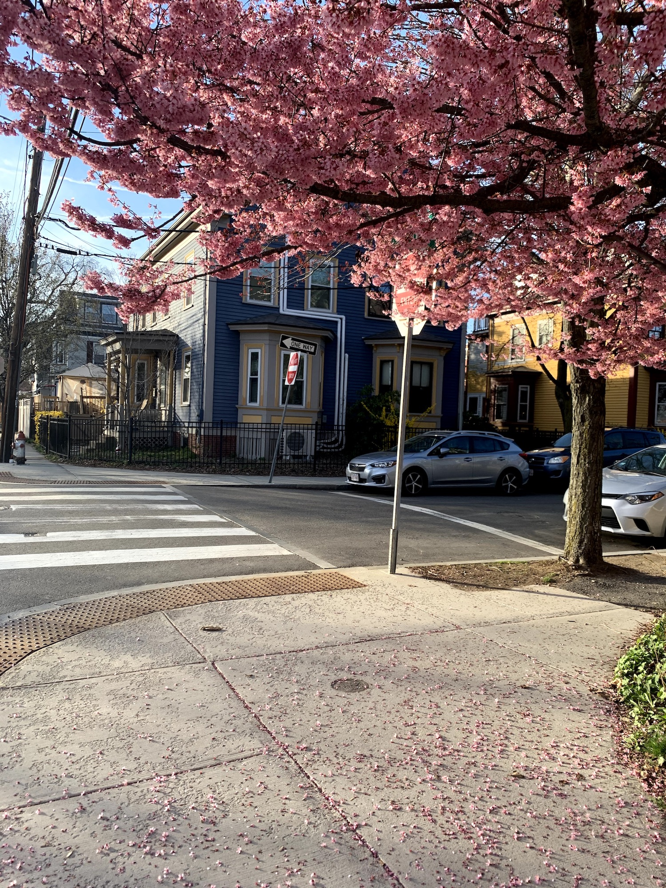
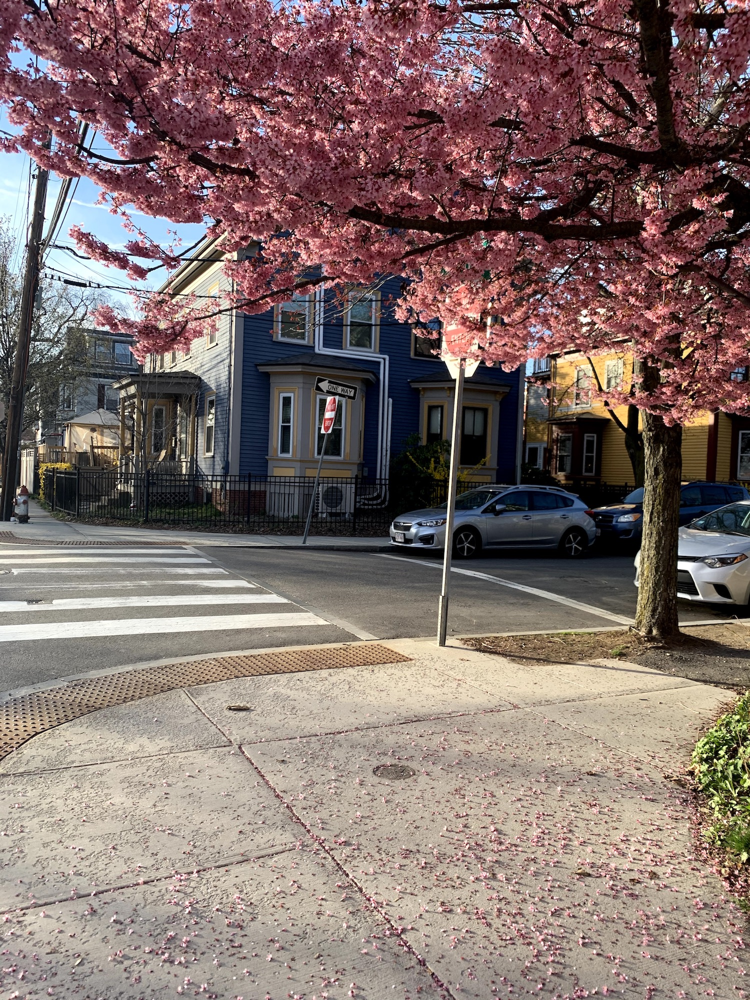

a wish from the heart’s left ventricle
back to the building from three years ago
sneaking into the rhythm of the concierge’s nods.
I keep finding myself in places I know too well,
an overexposed photo of blurred bodies yet
my face sits clearly where it has always been
near new students that have learned to carry
their name tags in their mouths. the pink touch-me-nots
beg to be saved from the coming winter so I pluck
one to dry with heavy words and strangers
identify her as patience.
if Central Square is the heart of this town,
is it my duty to function as a ventricle? sometimes I feel
more like a clogged artery, moving slowly whispering to myself
from block to block there’s a new bar
a new restaurant, a new bakery, a new apartment
my memory flips through blank pages, ashamed:
what have they replaced?
not the buskers that transition us from day to night
nor the dancers who spin to the tune of strawberry ice cream.
I cannot pass by a chance to wish—the stubborn dandelion
takes many blows. a huff
to wish for a romantic end. a puff
for the appearance of abundant friends. a bluff
to say there is nothing else. little parachutes
glide into the street.
if in months they are full of weeds,
it’ll be all on me
to wish that the dancing never ends.

 
